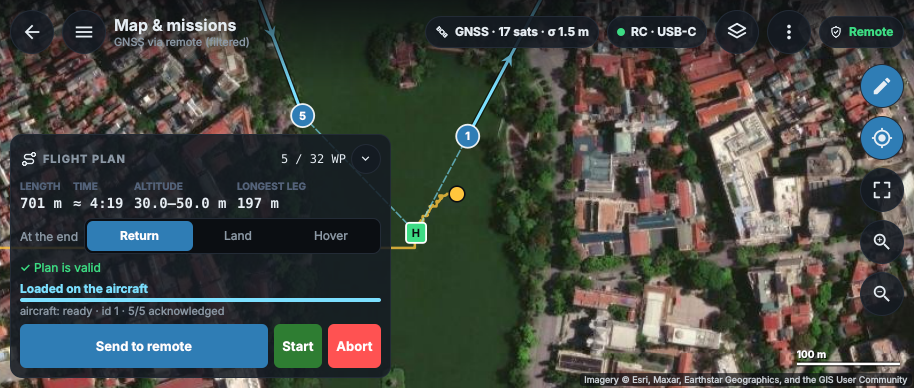
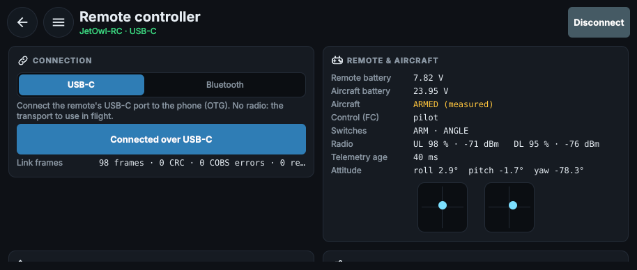
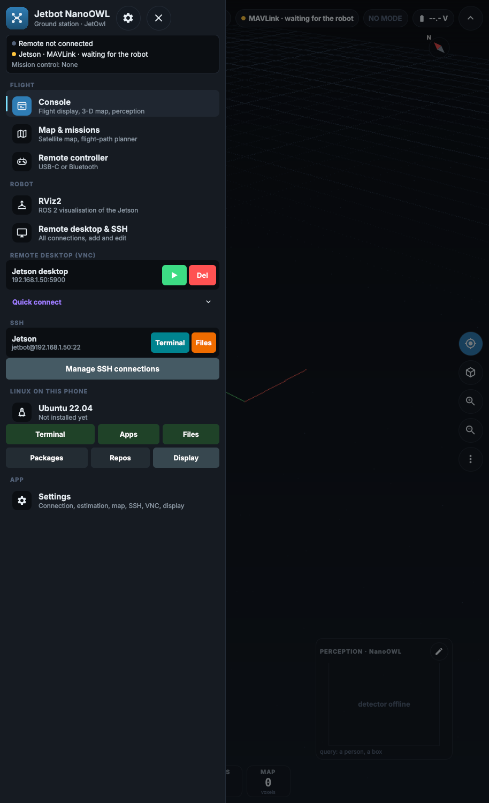
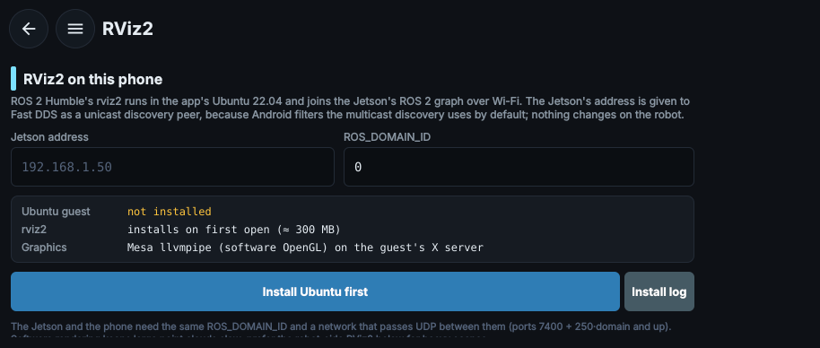

Jetbot NanoOWL — Qt 6 / C++ console¶
Source
Snapshot of docs/QT_APP.md from TNG-Blue/JetbotNanoOWL at commit d3d7467 (submodule Mobile/Android/JetbotNanoOWL/Qt). Regenerate with Scripts/mkdocs_hooks/snapshot_submodules.py after updating the submodule.
The Android console rewritten in C++ with Qt 6 (Qt Quick / QML), built into an APK by GitHub Actions. It runs on any 64-bit ARM phone with Android 9 or newer; the layout is tuned for a 20:9 phone held sideways, such as the Samsung Galaxy S21 Ultra (3200 × 1440, arm64-v8a).
Getting the APK¶
.github/workflows/build-apk.yml runs build-qt.yml on a push to qt or master, on every pull request, and on "Run workflow" (on master it also lets you choose qt, kotlin or both). A feature branch builds through its pull request — open a draft one to get CI — not on every push: a commit with a pull request used to be built twice (push and pull request, ≈ 24 min each) and the private repository's Actions budget ran out.
| job | what it does |
|---|---|
| Prepare | before anything is built: deletes the artifacts of finished runs (the newest one per name on master stays) and dead caches: those of closed pull requests and deleted branches, and the per-run APK hand-over caches of finished runs (below); on master, ends the run here when the push left Qt/ unchanged |
| Host tests | the native-core suite (jetbot_core_tests) and the Qt front-end tests (tst_frontend), then starts the desktop build headless and fails on any QML error |
| APK (arm64-v8a) | the APK to install on the phone |
| APK (x86_64) | the same app for the emulator only; not on master |
| Emulator smoke test | not on master (below); installs the x86_64 APK on an Android 14 emulator, checks it is still running after 25 s, that QML loaded and that the bundled OpenSSL was found; then runs the Linux environment's on-device self-test (PRoot from Termux, Ubuntu 22.04 bootstrap, a command and a PTY shell in the guest); uploads logcat and screenshots |
| Qt release | on a push to master or qt, publishes the signed arm64 APK as qt-build-N |
| Sync Qt/ to master | on a push to qt, after every job above passed: master's Qt/ follows this branch (below) |
Actions minutes¶
The repository is private, so every job's minutes (rounded up per job) count against the account's Actions budget; when it is spent, GitHub starts no job at all ("an Actions budget is preventing further use") until the budget is raised or the billing cycle ends. The pipeline spends only what a verdict needs:
| where | before | now |
|---|---|---|
| commit on a branch with a pull request | push + pull request: ≈ 48 min | pull request only: ≈ 24 min |
| master after a Qt sync | full pipeline: ≈ 24 min | prepare, host tests, arm64 APK, release: ≈ 12 min |
| master after a Kotlin sync | the whole Qt pipeline again: ≈ 24 min | prepare only: 1 min (Qt/ unchanged) |
Every job and every apt install also has a timeout (GitHub's default is 360 min, so one hung step could burn six hours of the budget), apt retries flaky mirrors, and the run artifacts are kept 3 days (the APK itself lives in the release).
master's Qt/ is a byte-identical subtree of a qt commit whose whole pipeline, smoke test included, passed before the sync, so master re-runs only what its release needs. Prepare compares the tree object of Qt/ before and after the push (git rev-parse <sha>:Qt, no file content fetched); a new branch, a forced push, any other event or any failure of that check builds everything.
Actions storage is cleaned before every build¶
Artifacts count against an account-wide storage quota shared with the other TNG-Blue repositories; once it is full, every upload fails. The pipeline's first job runs .github/scripts/cleanup_actions_storage.sh (the same script runs in Isaac_ROS-Jetbot_NanoOWL and JetOwl_FlightControl):
| storage | deleted | kept |
|---|---|---|
| artifacts | every artifact of a finished run | the current run's; those of runs still queued or in progress; the newest per name on the default branch (KEEP_LATEST, KEEP_BRANCHES) |
| caches | caches of closed pull requests and deleted branches; hand-over caches whose key carries a finished run's id (qt-apk-arm64-v8a-<run id>-<attempt>, ≈ 45 MB a run, confirmed finished through the API) — no run can restore them, and they would push the Qt toolchains (≈ 360 MB each) out of the 10 GB | the current run's and running runs' hand-over caches; the Qt toolchains and everything else on a live ref (GitHub evicts unused caches itself: LRU, 7 days) |
- Safe by construction. It first runs its self-test (
test_cleanup_actions_storage.sh: a fakeghserving a fixed repository, ten cases) and is skipped if that fails. It never fails the job and at most 300 deletions run per build (the token has 1000 API requests an hour). - Permissions.
actions: writeandpull-requests: read, granted bybuild-apk.yml; the sync below grants them in master'sbuild-apk.ymltoo. A pull request from a fork gets a read-only token: the script warns and deletes nothing. - Timing. GitHub recomputes the account's storage every 6–12 hours, so freed space counts from the next recomputation; uploads keep
continue-on-error. - Dry run from a shell with the GitHub CLI logged in:
GITHUB_REPOSITORY=TNG-Blue/JetbotNanoOWL DRY_RUN=1 GH_TOKEN=$(gh auth token) bash .github/scripts/cleanup_actions_storage.sh.
master's Qt/ follows the qt branch¶
sync-master.yml runs .github/scripts/sync_subtree_to_master.sh (the same script and workflow keep master's Kotlin/ a subtree of the kotlin branch), which keeps master's Qt/ a git subtree of qt:
- First run. master's old
Qt/(built against the Kotlin app's core) is removed in one commit, thengit subtree add --squashimports the qt tree.Kotlin/and everything else on master is untouched. - Every later run. One squash commit with qt's changes since the last sync, merged under
Qt/; nothing to do whenQt/already matches. A push to master in between is picked up and the sync retried (never forced). Qt/belongs to qt. A change made to master'sQt/directly that conflicts with qt stops the sync with the conflicting files listed, and nothing is pushed. Make Qt changes onqt.- master's pipeline.
build-qt.ymltakes arootinput ("." here, "Qt" on master). With theMASTER_SYNC_TOKENsecret the sync copies this branch'sbuild-qt.ymlto master's.github/workflows/, setsroot: Qtin master'sbuild-apk.ymland grants there every permission this branch'sbuild-apk.ymlgrants (a reusable pipeline's job cannot hold more than its caller), so master buildsQt/exactly as qt's CI built it, and its push starts master's CI. - Token.
MASTER_SYNC_TOKEN: a fine-grained personal access token on this repository with Contents: read and write and Workflows: read and write (Settings → Secrets and variables → Actions). Without itGITHUB_TOKENsyncsQt/only: GitHub refuses workflow-file changes from it and starts no workflow for its pushes. A protected master must let the token push. Qt/.github/on master is a copy of this branch's workflows and is never run there: GitHub runs workflows from the root.github/only.
To try it without touching GitHub: push master and qt into a local bare repository, clone it, and run the script there (SRC_BRANCH=qt PREFIX=Qt PIPELINE=build-qt.yml UPDATE_WORKFLOWS=1 bash .github/scripts/sync_subtree_to_master.sh).
Download JetbotNanoOWL-Qt-v2.0.N-arm64-v8a.apk from the qt-build-N release (Releases on the repository page), copy it to the phone and open it (allow "Install unknown apps" for the file manager once). The jobs hand the APK to one another through the Actions cache, not artifact storage, whose account-wide quota once stopped every build; the run's Artifacts keep a copy for three days when there is room.
The package id is com.tng_blue.jetbotnanoowl.qt, so the Qt app installs next to the legacy Kotlin app (com.tng_blue.jetbotnanoowl) instead of replacing it. versionCode is the workflow run number, so each build installs as an update of the previous one as long as both carry the same signing certificate (set the RELEASE_KEYSTORE_BASE64 / RELEASE_STORE_PASSWORD / RELEASE_KEY_ALIAS / RELEASE_KEY_PASSWORD secrets; without them the repository debug key signs it, see docs/APP_SIGNING_AND_PLAY_PROTECT.md).
Architecture¶
app/qml/pages, components presentation only: layout, gestures, dialogs
app/src/console ConsoleBackend: one telemetry snapshot per UI frame (25 Hz)
-> strings and values; SettingsStore (QSettings)
app/src/views QQuickPaintedItems: the native rasterisers write into a
QImage, the item blits it; PFD and charts are QPainter ports
app/src/net RelayClient: MAVLink over TLS through Server_Relay
app/src/remote RFB 3.8 client and view, VNC auth (FIPS 46-3 DES), libssh2
shell and SFTP with host keys trusted on first use
app/src/terminal xterm-subset emulator (Vt100) and the terminal view: SSH, or the
local Linux guest's shell on a PTY
app/src/linux the Linux environment (library jetbot_linux): PRoot runtime,
Ubuntu bootstrap, guest identity, PTYs, X display sessions,
apt and repositories; LinuxBackend is the QML singleton `Linux`
app/src/platform Android glue: system bars, foreground service, picker paths
app/src/rc Remote_UAV link: BLE (Nordic UART) and USB-C (CDC) transports,
session, command arbiter, GNSS track; QML singleton `Remote`
app/src/map SatelliteMap (Web Mercator tiles + overlay), the flight-plan
model (QML singleton `Plan`)
│
▼
core/ the native core, shared with the Kotlin app:
app/console_core estimator loop (50 Hz, own thread), maps, both transports
pipeline, estimation, median -> low-pass -> noise ID -> EKF -> pose fix; UAV KF;
mapping, net, render log-odds grid and voxels; JBL1 and MAVLink codecs
ConsoleCore (core/include/jetbot/app/console_core.h) is the orchestration that used to live inside the JNI bridge, moved out unchanged so that the Qt front end and the Kotlin app run the same cycle. The JNI bridge is now a thin wrapper over it. Nothing in app/ estimates or filters anything: the sensor-to-state chain is exactly the one derived in ESTIMATION_DESIGN.md and checked by the host suite (493 checks), and the console only observes — nothing is written back to the robot's actuators.
Navigation and flight pages¶
One navigation drawer (qml/components/NavDrawer.qml, opened from every page) groups the app by what the operator is doing, with a live summary of who commands the aircraft:
| group | page | what it is |
|---|---|---|
| Flight | Console | flight display, 3-D map, perception (unchanged) |
Map & missions (MapPage.qml) | satellite map, flight-path planner, upload/start/abort — SATELLITE_MAP.md | |
Remote controller (RemotePage.qml) | USB-C / Bluetooth link to Remote_UAV, its status, GNSS — REMOTE_LINK.md | |
| Robot | RViz2 (RvizPage.qml) | rviz2 in the Ubuntu guest on the Jetson's graph (unicast Fast DDS discovery), or the robot's own RViz2 over VNC |
Remote desktop & SSH (RemoteAccessPage.qml) | VNC, terminal, files — moved out of the old side menu | |
| Linux on this phone | Ubuntu, Terminal, Apps | unchanged |
| App | Settings | unchanged |
The drawer also keeps everything the old Connections menu had, one tap away: the saved VNC connections (open, delete) with a quick-connect form, the saved SSH connections (Terminal, Files) and Manage SSH connections, Linux Terminal / Apps / Files, shortcuts to the Linux page's Packages, Repos and Display tabs, and Settings in its header.
Flight pages replace each other on the stack, so back always returns to the console. Start options for checks without a device: --page map|remote|rviz|access|menu, --remote-usb (connect the remote at start), --upload-after MS.
 |  |
 |  |


Feature map from the Kotlin app¶
| Kotlin | Qt |
|---|---|
MainActivity console, diagnostics drawer | ConsolePage.qml + ConsoleBackend |
OccupancyMapView, MapView3D | MapView2D, MapView3D (same native rasterisers) |
PrimaryFlightDisplayView, TelemetryChartView, DetectionOverlayView | FlightDisplay, TelemetryChart, DetectionOverlay |
EstimationConfigStore, SettingsActivity | SettingsStore (QSettings), SettingsPage.qml; the estimator overrides are now editable, with range and Nyquist checks |
MavlinkRelayClient | RelayClient |
VNCViewerActivity | VncView / VncClient / VncPage.qml |
SSHTerminalActivity (xterm.js in a WebView), SSHFileTransferActivity, SFTPFileViewerActivity (JSch) | TerminalView + Vt100, SftpModel + SftpPage.qml (libssh2) |
LinuxEnvActivity, PRootRuntime, UbuntuGuest, LinuxEnvironment | LinuxPage.qml + LinuxBackend, PRootRuntime, LinuxEnvironment (C++; tar/xz/gzip readers instead of commons-compress) |
LinuxTerminalActivity (xterm.js), PtyProcess, TerminalFlowControl | TerminalView in local mode + PtySession; flow control is the kernel's PTY buffer |
LinuxDisplaySession, LinuxSurfaceActivity (one Activity per display in Recents) | DisplayManager, LinuxSurfaceView + LinuxDisplayPage.qml (one page per display; the running ones are listed on the Linux page) |
LinuxAppsActivity, LinuxAppRegistry, DesktopEntry | LinuxAppsPage.qml, desktopentry.cpp (pinning kept; launcher shortcuts not ported) |
LinuxRepository, LinuxRepositoriesActivity | aptrepositories.cpp, the Repositories card (ROS 2 Humble added as a preset; binary keys accepted) |
LinuxFilesActivity, LinuxFileBridge | LinuxFilesPage.qml (Qt's FileDialog is the system picker on Android) |
LinuxShellService, LinuxExitReport | LinuxGuestService.java, LinuxPlatform.takeExitReport |
The Linux environment is described in LINUX_ENVIRONMENT.md. It is why the app targets SDK 28: Android 10+ refuses to execute files an app wrote itself unless it targets 28 or lower, and the PRoot runtime and every guest program are such files.
Calibration to the screen¶
The layout is tuned for the window a Galaxy S21 Ultra gives the app held sideways, 866 × 387 dp (after the status and navigation bars). Every length in QML goes through Theme.dp() and every text size through Theme.sp(), with
for a window of \(W \times H\) dp. Scaling a layout that fits \(W_0 \times H_0\) by \(s\) needs \(sW_0 \le W\) and \(sH_0 \le H\); the minimum of the two ratios, \(f\), is the largest \(s\) that satisfies both, so the design fills a larger screen and still fits a smaller one without being redesigned for each.
Android's font size. Text is drawn at \(s \cdot \varphi\), with \(\varphi\) the system font scale (Configuration.fontScale, clamped to 0.85…1.3). Taking \(s = f\) alone therefore made every text-sized element \(\varphi\) times too big for its place — at the largest font the console's top bar ran off the screen. Auto now uses
so text lands at exactly \(f\), and any length made of \(a\) dp and \(b\) sp, \(a\,s + b\,s\varphi \le (a + b)\,f\), still fits; icons and spacing give way instead (touch targets never go below 40 dp). Widths that hold text (status chips, cards, dialogs, forms) are measured in text units, and the console's and the map's top bars drop their lowest-priority chips when they do not fit beside the title. The painted items (flight display, charts, compass, detection labels) take the same text scale. The Linux environment's pages keep their own calibration, \(s = \operatorname{clamp}(f, 0.85, 1.6)\). Settings → Display & about → Interface size overrides Auto with 85 … 150 %. On the desktop, JETBOT_FONT_SCALE=1.3 stands in for a phone's font setting.
| window | f | s at font ×1.0 | s at font ×1.3 |
|---|---|---|---|
| 720 × 343 (S21 Ultra at FHD+, bars subtracted) | 0.83 | 0.83 | 0.64 |
| 760 × 360 (18:9 phone) | 0.88 | 0.88 | 0.68 |
| 866 × 387 (Galaxy S21 Ultra) | 1.00 | 1.00 | 0.77 |
| 1280 × 752 (10" tablet) | 1.48 | 1.48 | 1.14 |

Changes in behaviour¶
- SSH host keys are verified (trust on first use, SHA-256 fingerprints in OpenSSH notation). The Kotlin client accepted any key.
- RRE sub-rectangle geometry is read big-endian, as RFC 6143 §7.7.3 requires. The shared decoder read it little-endian, so an RRE update from a real server painted its sub-rectangles in the wrong place; the core test was corrected with it.
- A relay with a pinned key ignores chain and name errors only when the presented key matches the pin; without a pin the system CAs and the host name are checked.
- Linux guest:
/usr/sbin/policy-rc.d(exit 101) so X packages configure without an init system;/dev/std*no longer bound, sottynamenames the PTY (tmux, ssh, gpg); PRoot extensions used only when the binary advertises them; hard links emulated only wherelink(2)fails.
Building locally¶
Desktop (for development and the tests):
pip install aqtinstall==3.3.0
python -m aqt install-qt linux desktop 6.8.3 linux_gcc_64 -O ~/Qt
~/Qt/6.8.3/gcc_64/bin/qt-cmake -S . -B build -G Ninja
cmake --build build
ctest --test-dir build --output-on-failure # core suite + front-end tests
./build/app/jetbotnanoowl
JETBOT_SCREENSHOT=out.png saves the window after 2 s (or JETBOT_SCREENSHOT_MS) and exits, which is how CI checks the layout headless. --page linux|linux-apps|linux-files|linux-terminal|linux-desktop|linux-app:<id> opens that page at start, --size WxH sets the window in dp (866x387 is a Galaxy S21 Ultra held sideways, without its status and navigation bars); --selftest=linux runs the Linux environment's self-test and logs linux-selftest: PASS or FAIL …. On the desktop the guest runs under the system's PRoot (JETBOT_PROOT to choose one, JETBOT_LINUX_HOME to put the guest elsewhere).
Android (needs JDK 17, Android SDK platform 34, NDK r26b). Keep the build tree outside the repository: on master, Gradle walks up from the generated project and would pick up the Kotlin app's settings.gradle.kts at the root.
python -m aqt install-qt all_os android 6.8.3 android_arm64_v8a -O ~/Qt
git clone https://github.com/KDAB/android_openssl.git third_party/android_openssl
~/Qt/6.8.3/android_arm64_v8a/bin/qt-cmake -S . -B ../build-android -G Ninja \
-DCMAKE_BUILD_TYPE=Release -DQT_HOST_PATH=~/Qt/6.8.3/gcc_64 \
-DANDROID_SDK_ROOT=$ANDROID_SDK_ROOT -DANDROID_NDK_ROOT=$ANDROID_SDK_ROOT/ndk/26.1.10909125
cmake --build ../build-android --target apk
# unsigned: ../build-android/app/android-build/build/outputs/apk/release/*.apk
Then zipalign and apksigner as in the workflow's Sign APK step, and adb install it.